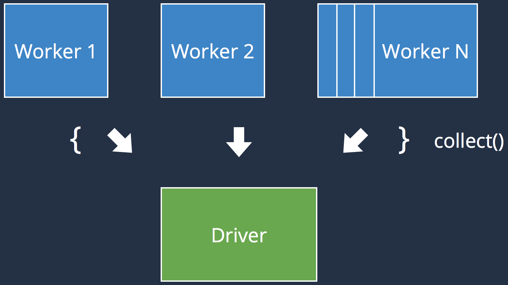
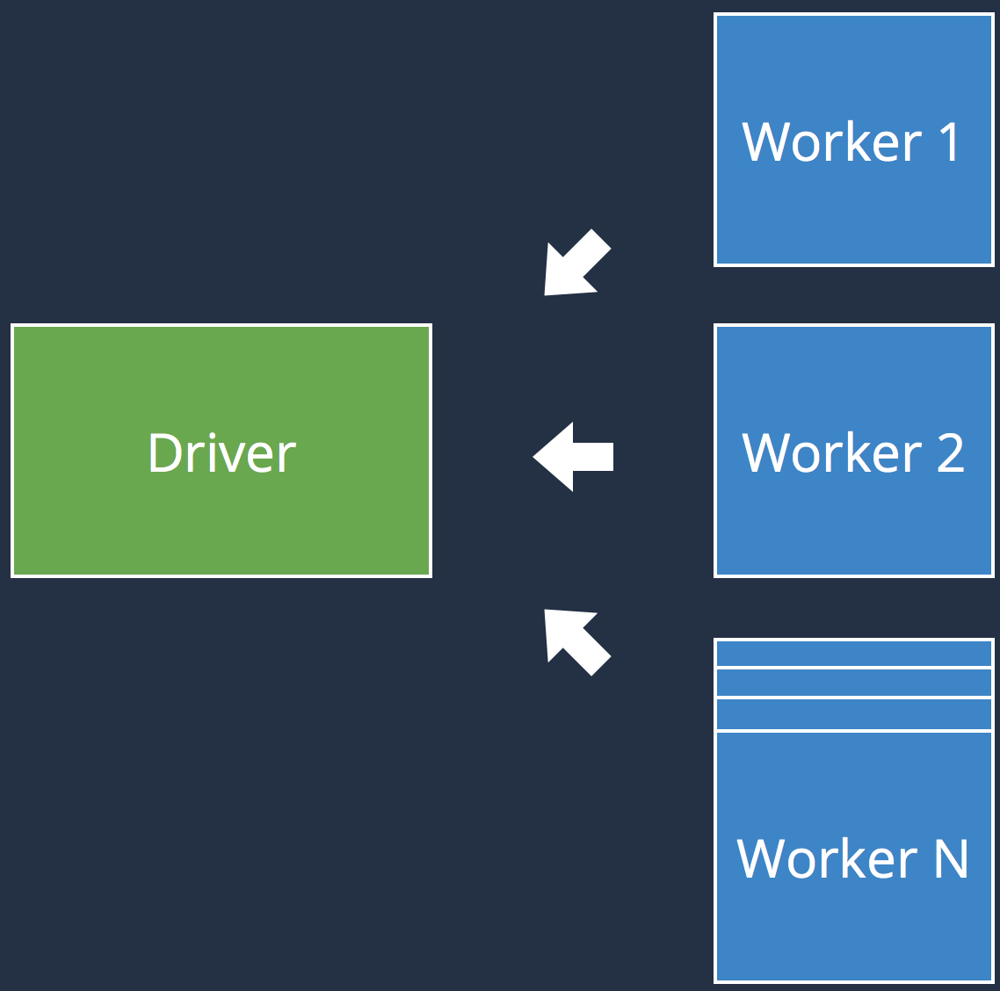
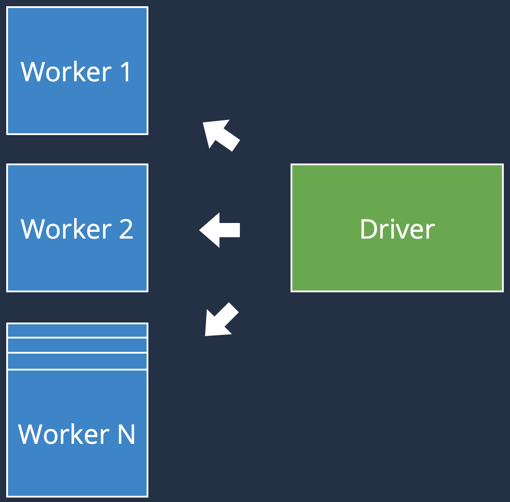
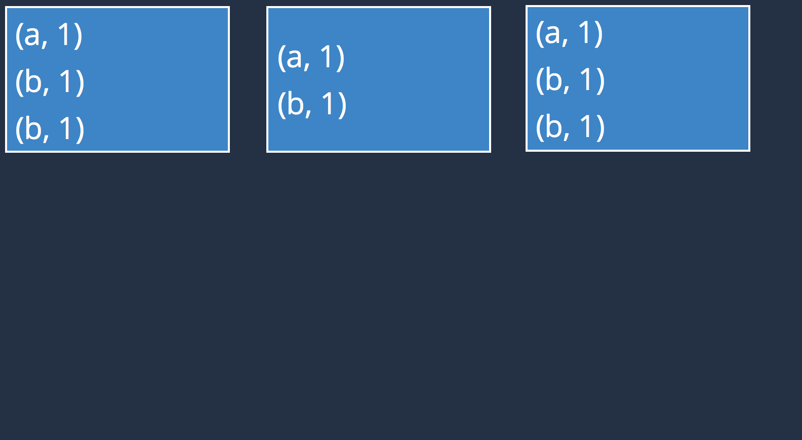
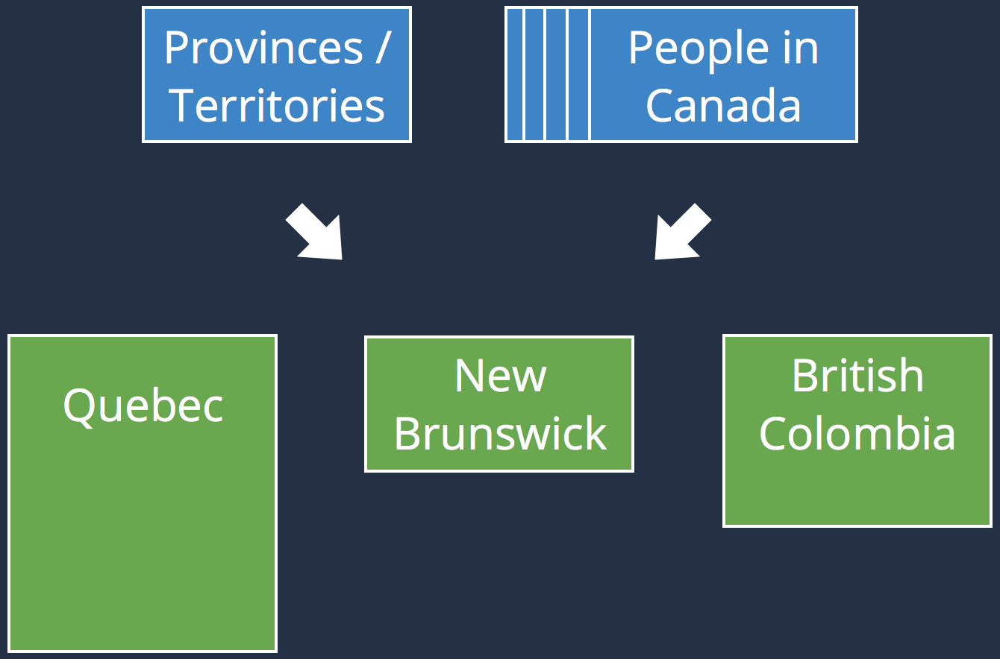

Quick overview
- Created in 2009
- Large-scale data processing engine
- Unified framework
- Extremely effective
- Popular
Agenda

Spark Architecture
Driver
Cluster
Manager
Manager
Executor
Cache
Node 1
Executor
Cache
Executor
Cache
Node 2
Resilient Distributed Dataset
Data
Executor
Executor
RDD
/* sc stands for Spark's context */
// numSlices is optional
val ints: RDD[String] =
sc.parallelize(Seq(1, 2, 3,4), numSlices)
// minPartitions is optional
val seqFiles: RDD[(Text, Text)] =
sc.sequenceFile[Text, text](input, minPartitions)
// minPartitions is optional
val rdd3: RDD[String] =
sc.textFile("hdfs://...", minPartitions)
Transformation & Actions
Transformations
val wc: RDD[(String, Int)] = rdd
.flatMap(_.split(" "))
.map((_, 1))
.reduceByKey(_ + _)
// Retrieves the data of each partition
val result: Seq[(String, Int)] = wc.collect()
// Writes the data in text files
val result: Unit = wc.saveAsTextFile("...")
// Counts the number of element in an RDD
val result: Long = wc.count()
// Retrieves the first four elements of an RDD
val result: Seq[(String, Int)] = wc.take(4)
Lineage
textFile(...)
.filter(...)
.map(...)
.reduceByKey(...)
HadoopRDD
FilteredRDD
MappedRDD
ShuffledRDD
Data
Executor
Executor
Executor
Executor
Narrow tranformations:
- No Shuffle
- Can be pipelined
1
2
1,2
Wide tranformations:
- May Shuffle
- Cannot be pipelined
1,2
1
2
- map
- flatMap
- filter
- ...
Executor
Executor
- reduceByKey
- groupByKey
- join*
- ...
Executor
Executor
Executor
Executor
Spark Execution Plan
Data
Executor
Executor
Executor
Executor
Stage 1
Stage 2
| T | T + 1 | |||
|
|
|
Executor
|
|
Executor
|
|
|
Executor
|
|
Executor
|
Transformation & Actions
- sparkContext
- .textFile("hdfs://...")
- .flatMap(ws => ws.split(" "))
- .map(w => (w, 1))
- .reduceByKey(_ + _)
"a b"
"a", "b"
("a", 1)
("b", 1)
("b", 1)
"a c"
"a", "c"
("a", 1)
("c", 1)
("c", 1)
("a", 2)
("b", 1)
("b", 1)
("c", 1)
rdd1
('a', 1)
('b', 1)
('a', 1)
('c', 1)
rdd2
('a', 1)
('b', 1)
('a', 1)
rdd1.join(rdd2)
('a', [1, 1, 1, 1])
('b', [1, 1])
('c', [1])
coalesce
1, 2
3
4
1, 2, 3
4
- Not evenly spread
- No shuffle
- Narrow transformation
repartition
1, 2, 3
4, 5
1, 3
2, 4
5
- Evenly spread
- Full shuffle
- Wide transformation
Spark execution plan


Recap
Spark in a nutshell:
- Cluster of executors and driver
- RDD, computation over a distributed dataset organized in partitions which may be re-arranged
- Shuffling
- Narrow and Wide transformations
- Stages, tasks
Optimizations possible:
- Partitioning
- Transformations
- Shuffling
Efficient Transformations
Efficient Partitioning
Efficient Shuffling
Conclusion
Spark execution plan
textFile
flatMap
map
reduceByKey
Stage 1
"a, b"
"a",
"b"
("a", 1)
("b", 1)
("b", 1)
"a, c"
"a",
"c"
("a", 1)
("c", 1)
("c", 1)
"a, b"
"a",
"b"
("a", 1)
("b", 1)
("b", 1)
Stage 2
("a", 3)
("b", 2)
("c", 1)
Partitioning
Partitioning
sc.parallelize
sc.textFile
sc.sequenceFiles[K,V]
sc.textFile
sc.sequenceFiles[K,V]
- Evenly spread
- Configurable
- Do not span across nodes
rdd.getNumPartitions
coalesce
1, 2
3
4
1, 2, 3
4
- Not evenly spread
- No shuffle
- Narrow transformation
repartition
1, 2, 3
4, 5
1, 3
2, 4
5
- Evenly spread
- Full shuffle
- Wide transformation
(3, c)
(1, a)
(2, b)
f(k)
(1, a)
(2, b)
(3, c)
- Only possible with pairs
- Complete control
- Can prevent shuffling
Where f(k) is a function resolving the partition to wich
a key belongs (eg. f(k) = k % total_partitions)
RDD : Persistence and Caching
val result = input.map(x => x*x)
println(result.count())
// RDD will be recomputed here
println(result.collect().mkString(","))import org.apache.spark.storage.StorageLevel
val result = input.map(x => x * x)
result.persist(StorageLevel.DISK_ONLY)
println(result.count())
// RDD won' be recomputed here
println(result.collect().mkString(","))val result = input.map(x => x*x)
println(result.count())
// RDD will be recomputed here
println(result.collect().mkString(","))import org.apache.spark.storage.StorageLevel
val result = input.map(x => x * x)
result.persist(StorageLevel.DISK_ONLY)
println(result.count())
// RDD won' be recomputed here
println(result.collect().mkString(","))// Use default storage level (MEMORY_ONLY)
result.cache()result.unpersist()| Level | Space | CPU | RAM | Disk |
| MEMORY_ONLY | High | Low | Y | N |
| DISK_ONLY | Low | High | N | Y |
| MEMORY_AND_DISK | High | Medium | Some | Some |
| MEMORY_ONLY_SER* | Low | High | Y | N |
| MEMORY_AND_DISK_SER* | Low | High | Some | Some |
| (*) : Data is serialized before being persisted (takes less space) | ||||
RDD : Execution
- val output = sparkContext
- .textFile("hdfs://...")
- .flatMap(_.split(" "))
- .map((_, 1))
- .reduceByKey(_ + _)
- .collect()
- print output
- val output = sparkContext
- .textFile("hdfs://...")
- .flatMap(_.split(" "))
- .map((_, 1))
- .reduceByKey(_ + _)
- .collect()
- print output
Executed on the driver
- val output = sparkContext
- .textFile("hdfs://...")
- .flatMap(_.split(" "))
- .map((_, 1))
- .reduceByKey(_ + _)
- .collect()
- print output
Executed on the driver
Executed on the executors
Executed on the executors
- val output = sparkContext
- .textFile("hdfs://...")
- .flatMap(_.split(" "))
- .map((_, 1))
- .reduceByKey(_ + _)
- .collect()
- print output
Executed on the driver
Executed on the executors
May return a value to the Driver
Executed on the executors
May return a value to the Driver


Don't use collect() on large RDDs !
- var counter = 0
- var rdd = sc.parallelize(data)
- rdd.foreach { rddItem => counter += 1 }
- print("Counter value: " + counter)
- var counter = 0
- var rdd = sc.parallelize(data)
- rdd.foreach { rddItem => counter += 1 }
- print("Counter value: " + counter)
RDD : Recap
- Spark = driver + executors
- RDD is an immutable distributed collection
- An RDD supports Transformations and Actions
- Spark = driver + executors
- RDD is an immutable distributed collection
- An RDD supports Transformations and Actions
- An RDD's lineage is a sequence of ransformation
- An RDD can be persisted for caching purpose
- Watch out for an RDD's execution (Driver vs. Executors)
Shared variables
var counter = 0
var rdd = sc.parallelize(data)
rdd.foreach { rddItem => counter += 1 }
print("Counter value: " + counter)var counter = 0
var rdd = sc.parallelize(data)
rdd.foreach { rddItem => counter += 1 }
print("Counter value: " + counter)val hugeArray = ...
var bigRddWithIndex = ...
bigRddWithIndex.map { rddItem => hugeArray[rddItem.key] }
...var counter = 0
var rdd = sc.parallelize(data)
rdd.foreach { rddItem => counter += 1 }
print("Counter value: " + counter)val hugeArray = ...
var bigRddWithIndex = ...
bigRddWithIndex.map { rddItem => hugeArray[rddItem.key] }
...Accumulators and Broadcast variables !
Accumulators
|
 |
| Accumulators aggregate values coming from the executors to the driver | |
Broadcast variables
|
 |
| Broadcast variables propagate a read-only value to all executors | |
| Accumulators : |
|
| Broadcast variables : |
|
Shuffling
|
 |
|
 |
|  |
|
 |
|
 |
|
 |
|
| Recommendations : |
|
Conclusion
- Learning Spark : by Andy Konwinski, Holden Karau, and Patrick Wendell
- Advanced Analytics with Spark : by Josh Wills, Sandy Ryza, Sean Owen, and Uri Laserson
- Introduction to Apache Spark : by Paco Nathan
Spark's high-level APIs
Spark SQL
- Released in February 2015
- Structured dataset querying through SQL
- Integrates with Hive, Parquet, JSon...
- Supports most of Hive's feature
import org.apache.spark.sql.hive.HiveContext
val hiveCtx = new HiveContext(new SparkContext(...))import org.apache.spark.sql.SQLContext
val sqlCtx = new SQLContext(new SparkContext(...))val dataframe = sqlCtx.createDataFrame(rdd)val dataframe = hiveCtx.jsonFile(inputFile)scala> dataframe.show()
root
|-- foo: struct (nullable = true)
| |-- waldos: array (nullable = true)
| | |-- element: string (containsNull = false)
|-- bar: boolean (nullable = true)
|-- qux: string (nullable = true)input.registerTempTable("foobar")
val foobarz = hiveCtx.sql("SELECT * FROM foobar ORDER BY qux LIMIT 10")foobarz.select(...).filter(...).groupBy(...)
foobarz.rdd.filter(...).map(...)
Spark Streaming
- Released in 2013
- Very stable and robust
- Real-Time analytics API
- Trendy

// Boilerplate
val conf = new SparkConf()
.setMaster("local[2]").setAppName("NetworkWordCount")
val ssc = new StreamingContext(conf, Seconds(1))
// Create a DStream listening on port 9999
val lines: DStream[String] = ssc.socketTextStream("localhost", 9999)
lines.flatMap(_.split(" "))
.map(word => (word, 1))
.reduceByKey(_ + _)
.print()
ssc.start() // Start the computation
ssc.awaitTermination() // Wait for the computation to terminate| Fault-tolerance : |
|

Spark APIs : What's left ?
| Spark ML : |
|
| GraphX : |
|